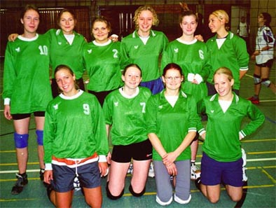
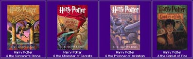

|
|
|
|
|
Bitte aktivieren Sie JavaScript, um die Menüleiste benutzen zu können. |
|||
| ||||||||||||||||||||||||||||||||||||||||||||||||||||||||||||||||||||||||||||||||||||||||||||||||||||||||||||||||||||||||||||||||||||||||||||||||||||||||||||||||||||
|
Ein
neues Jahr - ein neues Jahrtausend - und neue Perspektiven an unserem
Gymnasium: Der Text des Schulprogramms ist fertig, seinen Anspruch
umzusetzen ist unsere Aufgabe. Sie wird Schwerpunkt der gemeinsamen
Arbeit von Schülerschaft, Elternschaft und Kollegium sein. Herzlichen
Dank an alle, die sich bisher in der Arbeit für unser Schulprogramm
engagiert haben! Ein besonderes "Dankeschön" an Herrn Hauser!
Seiner unermüdlichen und geduldigen Arbeit verdanken wir die rechtzeitige
Abgabe des Textes. PersonaliaErfolgreich haben unsere Referendarinnen und Referendare ihre 2. Staatsprüfung abgelegt: Frau Gees, Frau Hellemann, Frau Juschka, Frau Kuhlmann, Frau Middelberg, Frau Rey, Herr Brienne, Herr Deerberg, Herr Tiedau. Mit großem Einsatz waren sie in den letzten zwei Jahren am Grabbe-Gymnasium auch über ihren Unterricht hinaus tätig. Herzlichen Dank dafür. Wir wünschen ihnen allen viel Erfolg bei ihren Bewerbungen um eine Dauerstellung im Schuldienst. Zum 31.10.2000 ist Herr OStR W. Deppe aus gesundheitlichen Gründen in den Ruhestand versetzt worden. In den langen Jahren seines Wirkens hat er sich für seine Fächer Deutsch und Geschichte engagiert und wertvolle Arbeit geleistet. Das Grabbe-Gymnasium dankt ihm dafür und wünscht ihm Gesundheit und Zufriedenheit im neuen Lebensabschnitt. Erlasse und Verfügungen; KonferenzbeschlüsseDie Lehrerkonferenz hat Neuregelungen für die Nachschreibe-Klausuren in der Oberstufe beschlossen, die vom 2. Halbjahr des Schuljahres 2000/2001 an gelten. Die nach der APO-GOSt (Ausbildungs- und Prüfungsordnung in der gymnasialen Oberstufe) verpflichtenden Nachschreibetermine liegen am Ende jedes Quartals. Um weiteren Unterrichtsausfall für erkrankte Klausurschreiber zu vermeiden, wird die Klausur des jeweils ersten Quartals am Elternsprechtag nachgeschrieben, d. h. erstmals am Freitag, 30. März 2001. Anzahl und Dauer der Klausuren der gymnasialen Oberstufe (lt. Fachkonferenz-Beschlüssen):
*Im 1. Quartal der Jahrgangsstufe 12.2
wird eine *Klausur durch eine Facharbeit ersetzt (s. auch Grabbe-Nachrichten
Nr. 4), Z = "Zeitstunden". (La) Buntes aus dem SchullebenSportlichesSchnelligkeit ist ...60 Minuten im Trimtrab-Tempo hielten Schülerinnen und Schüler rund um den Donoper Teich für das DLV-Laufabzeichen durch. Alle Achtung! Mit dabei waren: Tobias Lober, Johannes Bent, Daniel Böckenhoff, Johannes Heptner, Maren Hemminghaus und Jana Albrecht aus der 6m; Anne Kathrin Dierker, Inga Franke, Matthias Heer, Ansgar Jahnke und Philipp Müller aus der 7g. Aus der 7k starteten Alexandra Mitschke und Caroline Jaworek. Begleitet wurden sie von vielen Schülerinnen aus dem Oberstufenkurs von Frau Klefisch, die mit Sven Kube und Henning Klüppel diese Ausdauerveranstaltung organisiert hatten. Ein ganz besonderer Dank gilt auch den beiden Helferinnen der aktiven Schulsanitäter-AG, Lea Exl und Verena Reck, die vor Ort waren und den jungen Läuferinnen und Läufern bei der einen oder anderen Druckstelle helfen konnten. Erfolge für die VolleyballerinnenDie Volleyball-Schulmannschaft der WK IV
(weibliche Jugend D) des Grabbe-Gymnasiums errang bei den in der
Grabbe-Turnhalle durchgeführten Kreismeisterschaften nach deutlichen
Erfolgen in der Vor- und Zwischenrunde mit einem Finalsieg über
die Realschule I Detmold den Titel. Von den drei weiteren gemeldeten
Mannschaften des Grabbe-Gymnasiums belegte die 2. Mannschaft den
vierten Platz. In der Wettkampfklasse III (weibliche Jugend
C) belegten die 1. und 2. Volleyball-Mannschaften des Grabbe-Gymnasiums
den 2. und 3. Platz. Es siegte die Mannschaft des Stadtgymnasiums
Detmold. In der Wettkampfklasse I (weibliche Jugend A) wurde die Mädchenmannschaft des Grabbe-Gymnasiums wie in den vorangegangenen Jahren souverän Kreismeister. Nach einem überlegenen Sieg im Halbfinale gegen die Mannschaft des Leopoldinums, wurde im Finale das Team des Dietr.-Bonhoeffer-Berufskollegs deutlich in zwei Sätzen geschlagen. Alle Spielerinnen zeigten großen Einsatz, technisches Können und Teamgeist und freuen sich mit ihrem Betreuer Herrn Borowek auf das Turnier um die Bezirksmeisterschaft am 1.02.2001 in Höxter. 
Rottpokal Unterstufe 2000Das Weihnachtsfußballturnier der 5.
und 6. Klassen zum Gedenken an unseren Kollegen Jürgen Rott war
auch in diesem Jahr ein voller Erfolg. Vier Mädchen-, vier Mixed-
und sieben Jungenmannschaften spielten mit viel Können und großem
Engagement in den verschiedenen Spielklassen um den Titel in ihrer
Spielklasse. Zur tollen Stimmung trug neben der Spielfreude auf
dem Spielfeld auch die Unterstützung der zahlreichen Schülerinnen
und Schüler bei, die ihre Mannschaften lautstark anfeuerten. Dirk Morawitz, ehe-maliger Sport-LK-Schüler und jetzt in Köln auf "Verbrecherjagd", wurde deutscher Polizei-meister über 100 m, 200 m und in der 4x100 m-Staffel! Da läuft ihm wohl keiner mehr davon... ... keine Zauberei!Hurra, der Potter ist da! Jetzt findet ihr ihn auch in der Schülerbibliothek. Sollte er aber gerade nicht da sein, gibt es noch 20 weitere neue interessante Bücher, darunter das "Buch des Monats". Ausleihen könnt ihr sie jeweils montags und freitags in der 1. großen Pause im Raum neben der Cafeteria "Pop und Corn". 
Anna liest preisverdächtigJede erste Dezemberwoche hört man in den 6. Klassen spannende Geschichten, vorgetragen von den zahlreichen Bewerbern um den Schulmeistertitel im Vorlesewettbewerb des Deutschen Buchhandels. In der spannenden Endausscheidung hat diesmal Anna Gemke (6g) mit einem Text aus "Die Flaschenpost" von Klaus Kordon die vier Jurymitglieder überzeugt. Sie vertritt das Grabbe auf Kreisebene. Viel Erfolg! Jetzt wird´s künstlerisch: "Stars...Ende Oktober erreichten die Künstlerinnen Carolina Kerschner einen ersten und Anne Freitag einen zweiten Platz mit ihren selbst entworfenen und geschneiderten Kleidungsstücken in einem europaweiten Design-Workshop von Mercedes-Benz zum Thema "Der Mensch im 3. Jahrtausend". Die hochkarätige Veranstaltung wurde durch die Zusammenarbeit mit der FH Pforzheim im badischen Rastatt durchgeführt. Während die beiden Preisträger und Ines Wagner ihre Mode-Modelle selbst vorführten, stellte Antonia von Reden im zweiten Workshop "Transportations Design" mit den jungen Designern aus ganz Europa ihre kreativen Ideen zu Fahrzeugen der Zukunft vor. Eine ganze Woche hatten diese Grabbe-Künstlerinnen der 11. - 13. Jahrgangsstufe Gelegenheit, intensiv und praxisnah eine Berufsperspektive kennen zu lernen. ... and Stripes"Zu Schuljahresbeginn hat der Kunst-Leistungskurs
13 von Herrn Huneke seine schon im Vorjahr geplante Installation
im Treppenhaus des Erweiterungsbaus realisieren können. Acht
große Acrylglasflächen hängen nun dort, stufig versetzt und um eine
quadratische Mitte angeordnet. Das Profil der Flächen gab die Struktur
der Bemalung vor: senkrechte Streifen, die bei Blickwechsel aus
verschiedenen Richtungen die Farbe wechseln und so beim Gang durchs
Treppenhaus immer wieder andere Erscheinungsweisen hervorrufen. (Hu)] Vive la France !Auch in diesem Jahr waren 27 Schülerinnen und Schüler des Grabbe zu Besuch bei ihren Austauschpartnern in St. Omer. Eine ganze Woche verbrachten sie bei Sonnenschein in der nordfranzösischen Partnerstadt mit Ausflügen nach Lille, Calais und Boulogne, wohl behütet von Frau Pentinghaus und Herrn Plöger. Wieder einmal konnten die Jugendlichen die sprichwörtliche Gastfreundschaft der französischen Familien bei Croissants, Café au lait und ... kennen lernen. Im Mai kommen die französischen Schülerinnen und Schüler zum Gegenbesuch, vielleicht gibt es hier dann Pickert und Leberwurst. Gastgeber werden noch gesucht! (Pe) Musikalische "Akkordarbeit"Nach intensiven Proben in einer Orchesterfreizeit
konnte man bei den Darbietungen der Grabbe-Musiker und Sänger ganz
besonders "aufhorchen". Berufs- und Studienorientierungsseminar der Adenauer-StiftungMitte Dezember fand in Köln wieder ein Berufsseminar für interessierte Schülerinnen und Schüler der Jahrgangsstufe 12 statt. Gemeinsam mit einer Kooperations-schule aus Sachsen nahmen 20 Grabbianer im Schloss Eichholz an dem Seminar teil. Obwohl schon mehrfach Berufsinformationsveranstaltungen in der Jahrgangs-stufe stattgefunden hatten, übertraf dieses Seminar alles andere; sowohl in der Unterbringung als auch in Informationsgrad der Arbeitsgruppen und Kompetenz der Referenten. Begleitpersonen der Gruppe waren Herr Hauser, der diesen so wie auch 14 vorangegangene Besuche in Köln bravourös organisiert hatte, und Herr Deerberg. Abgerundet wurde die Veranstaltung durch einen Besuch des Kölner Weihnachtsmarktes. (K. Bomsdorf, M. Krüger) Unterstufen-SVMit Elan am Werk sind unsere Unterstufler, die zum Tag der offenen Tür eine große Hilfe durch die Bäckerei Heidsiek erfahren konnten. Sie hatte viele Tüten Kekse gespendet. Darüber freute sich so manch kleines Krümelmonster... Grabbe-LogoDie drei gelungensten Vorschläge der SV-Aktion kamen von Bergita Ganse, Carolina Kerschner und Lini Erlich. Die drei prämierten Schülervorschläge sowie die Vorschläge von Herrn Meiner und Herrn Huneke werden - möglichst mit hinzu-gefügtem Schriftzug "Grabbe-Gymnasium" - in allen Schulmitwirkungsgremien vorgestellt. Geselligkeit war TrumpfIn der Vorweihnachtszeit fanden traditionsgemäß das Grünkohlessen des Kollegiums und das Pensionärstreffen statt. Wieder war das Interesse groß und viele nutzten die Gelegenheit zum Gedankenaustausch in adventlich geschmückter Umgebung. Termine
|
|||||||||||||||||||||||||||||||||||||||||||||||||||||||||||||||||||||||||||||||||||||||||||||||||||||||||||||||||||||||||||||||||||||||||||||||||||||||||||||||
Redaktionsteam:
Walter Hunger - Werner Klapproth – Helga Köster – Peter Kollotzek
Christian-Dietrich-Grabbe-Gymnasium
Küster-Meyer-Platz 2
32756 Detmold
Tel.: 05231 – 99260
Fax.: 05231 – 992616
Sekretariat:
Frau Kalina, Frau Nawrotzki
Hausmeister: Herr Hauptstein
Auflage:
1200 Redaktionsschluss: 10.01.01
Druck: Copy-Center, DT., Tel.: 99933-0